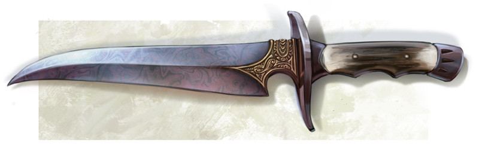

La Guerre des Guildes
Plusieurs guildes liées au milieu du crime de Laelith s'affrontent pour obtenir le contrôle de la cité. Votre guilde l'emportera-t-elle ? Montrez vos talents de diplomate !
Description du jeu
Chaque joueur incarne le chef d'une guilde de voleurs et possède deux types de personnes à son service : de vrais voleurs et de simples hommes de main. Les voleurs sont fidèles et permettent d'étendre le contrôle d'une guilde alors que les hommes de main servent plutôt de doublure et sont susceptibles de changer de camp.
Le jeu consiste à négocier des rendez-vous avec d'autres chefs de guilde pour sceller des accords et augmenter l'influence de votre organisation. Pour chaque rendez-vous, on peut envoyer une ou deux personnes, et pour chacune d'elles on définit une attitude : amicale (volonté de négocier et de faire des affaires) ou inamicale (position ferme, voire carrément hostile). Il y a 50 lieux de rendez-vous possibles en ville.
Suivant les combinaisons des personnes qui se retrouvent aux rendez-vous, l'issue en sera différente. Si une seule guilde est présente à un rendez-vous rien ne se passe. De même si plus de trois personnes sont présentes à un même rendez-vous, car tout le monde est bien trop méfiant. Quelque chose ne se passe donc que si deux ou trois personnes d'au moins deux guildes différentes vont à un rendez-vous. L'issue peut être qu'une guilde gagne un nouveau voleur, un nouvel homme de main, ou que le rendez-vous tourne mal et termine dans le sang.
Chaque joueur commence sa partie avec 2 voleurs et 3 hommes de main.
L'identité des joueurs est secrète, c'est-à-dire que lorsque le jeu commence, on ne sait pas quelle guilde représente un joueur. De même, à la fin d'un tour, les chefs de guilde ne seront au courant que du nombre de personnes qui se sont présentées à un rendez-vous et à quelle guilde ils appartenaient. Personne ne saura quel type de personne étaient présentes et encore moins leur attitude. Il faudra donc déduire cela du résultat de la rencontre.
La table de résolution
Ci-dessous le cœur du jeu, la table de résolution. Les résultats sont basés sur le fait que les rendez-vous sont censés se faire entre voleurs. Si chaque guilde envoie bien des voleurs avec une attitude positive, un bon accord sera trouvé et les guildes étendront leur influence. Si chaque guilde envoie des seconds couteaux ou bien des voleurs sans réelle intention de négocier, l'accord sera moins bon et seuls des hommes de mains additionnels seront recrutés. Mais tout se corse lorsqu'une guilde envoie effectivement un voleur et l'autre un homme de main : là les embrouilles commencent car cela est prit comme une forme de trahison.
| Guildes | ||||
| - A - | - B - | - C - | Résultat | Explication RP |
| V + + - - |
V + - + - |
+1V chacun --- --- +1H chacun |
Les 2 guildes collaborent et se développent Aucun accord Aucun accord La tension est telle que les guildes embauchent un homme de main supplémentaire |
|
| V + + - - |
H + - + - |
+1H chacun --- H(B) est tué --- |
Les 2 guildes collaborent mais faute d'accord entre chefs, le développement est faible * La guilde B voulait tendre un piège à la guilde A, mais l'homme de main s'est ravisé La guilde A tend un piège à la guilde B Les deux camps sont trop méfiants, il ne se passe rien |
|
| H + + - - |
H + - + - |
+1H chacun --- --- +1H chacun |
Les 2 guildes collaborent mais faute d'accord entre chefs, le développement est faible Aucun accord Aucun accord La tension est telle que les guildes embauchent un homme de main supplémentaire |
|
| V et V + + - - |
V + - + - |
+1V(A) Un V tué de chaque côté V(B) est tué --- |
Les 2 guildes collaborent mais l'une prend le dessus sur l'autre La guilde B tend un piège à la guilde A mais est en sous nombre La guilde A tend un piège à la guilde B Faute d'équilibre, la réunion n'a pas lieu |
|
| V et V + + - - |
H + - + - |
H(B) change de guilde Un V(A) et H(B) sont tués H(B) est tué H(B) change de guilde |
Les voleurs parviennent à convaincre l'homme de main de changer de guilde La guilde B tend un piège à la guilde A mais est en sous nombre La guilde A tend un piège à la guilde B Les voleurs parviennent à convaincre l'homme de main de changer de guilde |
|
| V et H + + - - |
H + - + - |
+1H(A) Un H tué de chaque côté H(B) tué H(B) change de guilde |
Les 2 guildes collaborent mais pas d'accord entre chefs et l'une prend le dessus sur l'autre La guilde B tend un piège à la guilde A mais est en sous nombre La guilde A tend un piège à la guilde B Les voleurs parviennent à convaincre l'homme de main de changer de guilde |
|
| V et H + + - - |
V + - + - |
+1H chacun H(A) est tué V(B) est tué --- |
Les 2 guildes collaborent mais faute d'équilibre, le développement est faible La guilde B tend un piège à la guilde A mais est en sous nombre La guilde A tend un piège à la guilde B Faute d'équilibre, la réunion n'a pas lieu |
|
| H et H + + - - |
V + - + - |
+1H chacun Un H(A) est tué Un H(A) et V(B) sont tués --- |
Les 2 guildes collaborent mais faute d'équilibre, le développement est faible La guilde B tend un piège à la guilde A mais est en sous nombre La guilde A tend un piège à la guilde B mais l'adversaire est plus fort Faute d'équilibre, la réunion n'a pas lieu |
|
| H et H + + - - |
H + - + - |
H(B) change de guilde Un H tué de chaque côté H(B) est tué H(B) change de guilde |
Les hommes de mains parviennent à convaincre l'autre de changer de guilde La guilde B tend un piège à la guilde A mais est en sous nombre La guilde A tend un piège à la guilde B Les hommes de mains parviennent à convaincre l'autre de changer de guilde |
|
| V | V | V | +1V chacun si tous +, sinon --- |
Les 3 guildes collaborent et se développent |
| V | V | H | +1H(A) et +1H(B) si tous +, sinon H(C) est tué |
Les 3 guildes collaborent mais faute d'accord entre chefs, le développement est faible |
| V | H | H | +1H(A) si tous +, sinon V(A) est tué |
Les 3 guildes collaborent mais faute d'accord entre chefs, le développement est faible |
| H | H | H | +1H chacun si tous +, sinon --- |
Les 3 guildes collaborent mais faute d'accord entre chefs, le développement est faible |
V=Voleur ; H=Homme de main ; + Attitude positive ; - Attitude négative
Techniquement
Pour jouer, il suffit d'être inscrit au forum. Bien entendu une seule participation par personne est autorisée, sous peine de sanction immédiate.
La Guerre des Guildes est un jeu de diplomatie, donc la base du jeu est la négociation (le hasard n'intervient pas du tout) et celle-ci peut se faire via MP (messages privés du forum) entre deux joueurs, ou de manière ouverte sur le forum.
Un tour durera 72 heures. C'est-à-dire que tous les 3 jours les joueurs devront poster leurs ordres, et le résultat sera automatiquement affiché sur le site au terme de la période. Si un joueur ne poste pas à temps, il perdra automatiquement un voleur, sachant que lorsqu'un joueur n'a plus aucun voleur, il n'a plus aucune chance de faire prospérer sa guilde (mais il peut toujours nuire en envoyant ses hommes de main).
Pour le moment l'idée est de faire des parties de 10 tours avec 10 joueurs, c'est-à-dire une partie par mois.
Le pouvoir de chaque guilde, qui se mesure en fonction du nombre de voleurs (les hommes de main ne sont pris en compte que pour départager d'éventuels ex-aequo) sera mis à jour publiquement à la fin de chaque tour.
Et n'oubliez pas, il n'y aura qu'un seul vainqueur de la Guerre des Guildes...

Le concept de la Guerre des Guildes est basé sur Double Jeu, de Michel Brassinne